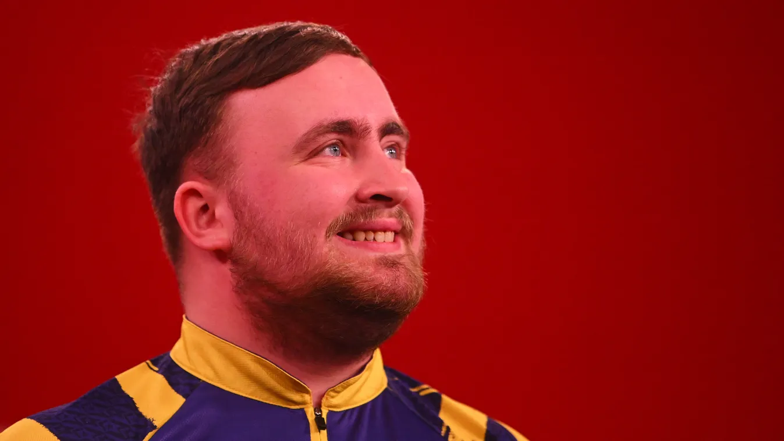
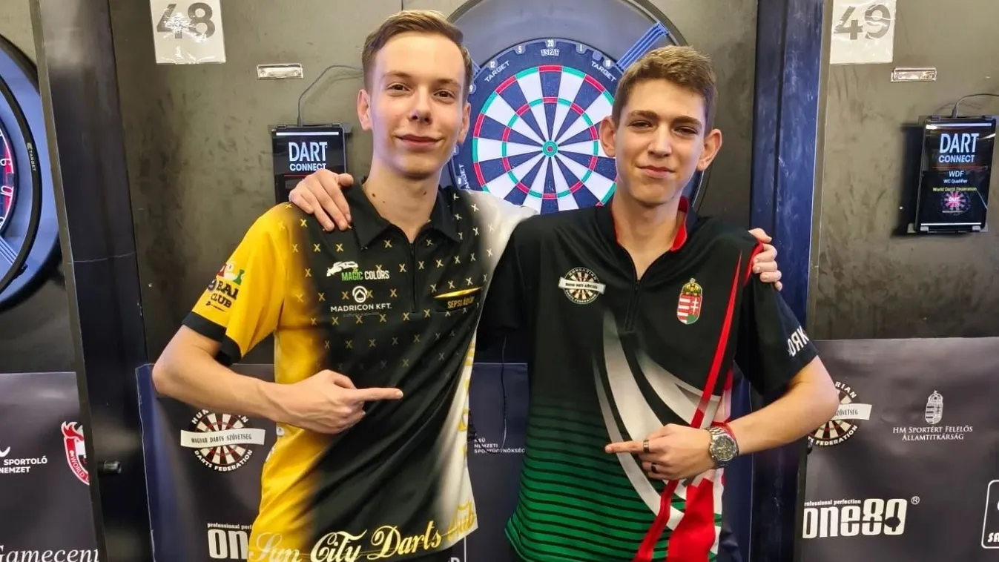

Luke Littler győzelmével zárult a Players Championship Finals

Luke Littler nyerte meg a profi dartsosok Players Championship Finals tornáját, miután a
döntőben
felülmúlta Nathan Aspinallt az angliai Mineheadben. Az U23-as vb-n pedig Gian van Veen
megvédte
címét.
A december 11-én rajtoló londoni világbajnokság előtti utolsó nagy PDC-verseny döntőjébe a négy
között Gerwyn Price-t búcsúztató Luke Littler és a többek között Jermaine Wattimenán legyőző
Nathan Aspinall jutott be. Végig a világelsőnél volt az előny, és bár honfitársa próbálkozott,
nem tudta utolérni riválisát, így a tavalyi elveszített finálé után a 18 éves Littler immár
ebben a sorozatban is diadalmaskodott.
Harmincan jelentkeztek az első estére: darts szakosztály alakulhat Balástyán
Hamarosan bővülhet a balástyai sportkör kínálata. Néhány lelkes rajongónak köszönhetően
darts szakosztály létesülhet a Balástya Községi Sportkörben.
Néhány lelkes sportrajongó és a balástyai sportkör együttműködésével új sportágat, a dartsot
próbálhatják ki a községben élők. A szervezők november 19-én, szerdán 18.30-tól várják az első
dartsozásra az érdeklődőket a sportöltöző tetőterébe. Ha elég jelentkező, játékos lesz, tavaszra
megalakulhat a darts szakosztály az 1989-ben alapított klubban.
Óriási magyar sikerek darts-ban

Sepsi Ádám és Szabó Benedek is kivívta részvételét a World Darts Federation (WDF) által
szervezett lakeside-i világbajnokságra - adta hírül vasárnap a Magyar Darts
Szövetség.
A szerdától vasárnapig a budapesti Gerevich Aladár Nemzeti Sportcsarnokban megrendezett tizenegy
napos Darts Világfesztivál keretében megrendezett világbajnoki kvalifikációk során, a zárónapon
Sepsi és Szabó is rendkívül magabiztos játékkal harcolta ki az indulási jogot.